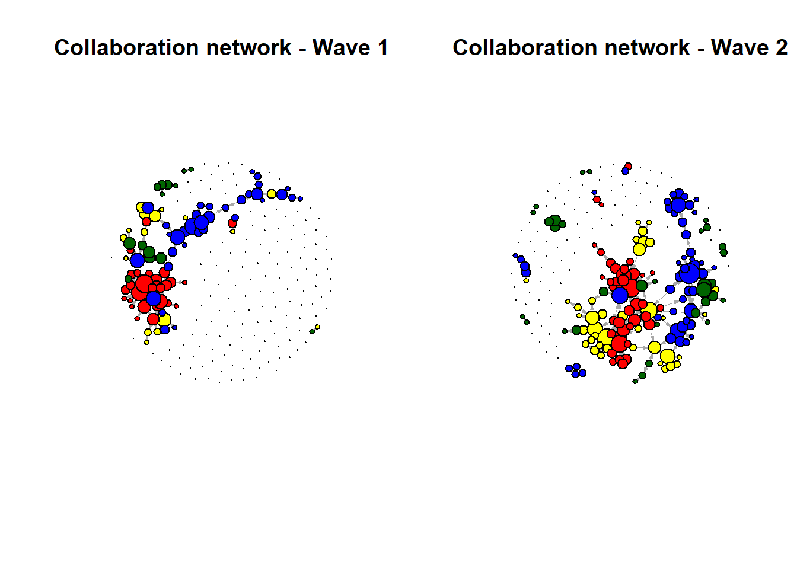
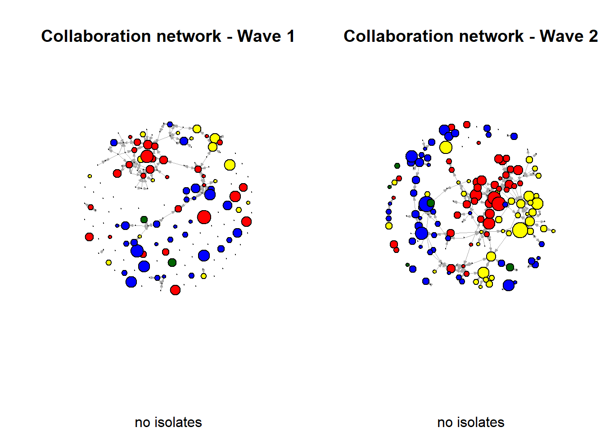
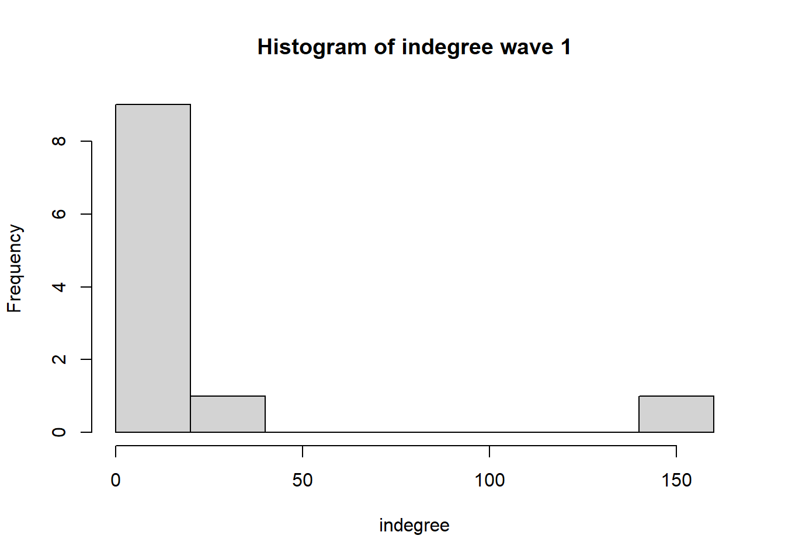
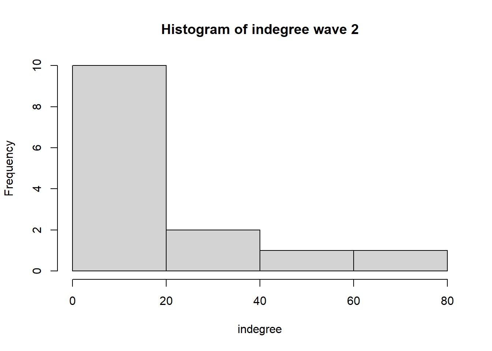

Set up
rm(list = ls())
‘Out of sight, out of mind: a social network approach to
geographical distance and co-authorship collaboration at four Sociology
departments in the Netherlands’
Functions
#---- Loading packages ----
fpackage.check <- function(packages) {
lapply(packages, FUN = function(x) {
if (!require(x, character.only = TRUE)) {
install.packages(x, dependencies = TRUE)
library(x, character.only = TRUE)
}
})
}
#---- Data saving ----
fsave <- function(x, file = NULL, location = "./data/processed/") {
ifelse(!dir.exists("data"), dir.create("data"), FALSE)
ifelse(!dir.exists("data/processed"), dir.create("data/processed"), FALSE)
if (is.null(file))
file = deparse(substitute(x))
datename <- substr(gsub("[:-]", "", Sys.time()), 1, 8)
totalname <- paste(location, file, "_", datename, ".rda", sep = "")
save(x, file = totalname) #need to fix if file is reloaded as input name, not as x.
}
#---- Loading in data ----
fload <- function(filename) {
load(filename)
get(ls()[ls() != "filename"])
}
#---- Output ----
fshowdf <- function(x, ...) {
knitr::kable(x, digits = 2, "html", ...) %>%
kableExtra::kable_styling(bootstrap_options = c("striped", "hover")) %>%
kableExtra::scroll_box(width = "100%", height = "300px")
}
#---- Moran's I ----
fMoran.I <- function(x, weight, scaled = FALSE, na.rm = FALSE, alternative = "two.sided", rowstandardize = TRUE) {
if (rowstandardize) {
if (dim(weight)[1] != dim(weight)[2])
stop("'weight' must be a square matrix")
n <- length(x)
if (dim(weight)[1] != n)
stop("'weight' must have as many rows as observations in 'x'")
ei <- -1/(n - 1)
nas <- is.na(x)
if (any(nas)) {
if (na.rm) {
x <- x[!nas]
n <- length(x)
weight <- weight[!nas, !nas]
} else {
warning("'x' has missing values: maybe you wanted to set na.rm = TRUE?")
return(list(observed = NA, expected = ei, sd = NA, p.value = NA))
}
}
ROWSUM <- rowSums(weight)
ROWSUM[ROWSUM == 0] <- 1
weight <- weight/ROWSUM
s <- sum(weight)
m <- mean(x)
y <- x - m
cv <- sum(weight * y %o% y)
v <- sum(y^2)
obs <- (n/s) * (cv/v)
if (scaled) {
i.max <- (n/s) * (sd(rowSums(weight) * y)/sqrt(v/(n - 1)))
obs <- obs/i.max
}
S1 <- 0.5 * sum((weight + t(weight))^2)
S2 <- sum((apply(weight, 1, sum) + apply(weight, 2, sum))^2)
s.sq <- s^2
k <- (sum(y^4)/n)/(v/n)^2
sdi <- sqrt((n * ((n^2 - 3 * n + 3) * S1 - n * S2 + 3 * s.sq) - k * (n * (n - 1) * S1 - 2 * n *
S2 + 6 * s.sq))/((n - 1) * (n - 2) * (n - 3) * s.sq) - 1/((n - 1)^2))
alternative <- match.arg(alternative, c("two.sided", "less", "greater"))
pv <- pnorm(obs, mean = ei, sd = sdi)
if (alternative == "two.sided")
pv <- if (obs <= ei)
2 * pv else 2 * (1 - pv)
if (alternative == "greater")
pv <- 1 - pv
list(observed = obs, expected = ei, sd = sdi, p.value = pv)
} else {
if (dim(weight)[1] != dim(weight)[2])
stop("'weight' must be a square matrix")
n <- length(x)
if (dim(weight)[1] != n)
stop("'weight' must have as many rows as observations in 'x'")
ei <- -1/(n - 1)
nas <- is.na(x)
if (any(nas)) {
if (na.rm) {
x <- x[!nas]
n <- length(x)
weight <- weight[!nas, !nas]
} else {
warning("'x' has missing values: maybe you wanted to set na.rm = TRUE?")
return(list(observed = NA, expected = ei, sd = NA, p.value = NA))
}
}
# ROWSUM <- rowSums(weight) ROWSUM[ROWSUM == 0] <- 1 weight <- weight/ROWSUM
s <- sum(weight)
m <- mean(x)
y <- x - m
cv <- sum(weight * y %o% y)
v <- sum(y^2)
obs <- (n/s) * (cv/v)
if (scaled) {
i.max <- (n/s) * (sd(rowSums(weight) * y)/sqrt(v/(n - 1)))
obs <- obs/i.max
}
S1 <- 0.5 * sum((weight + t(weight))^2)
S2 <- sum((apply(weight, 1, sum) + apply(weight, 2, sum))^2)
s.sq <- s^2
k <- (sum(y^4)/n)/(v/n)^2
sdi <- sqrt((n * ((n^2 - 3 * n + 3) * S1 - n * S2 + 3 * s.sq) - k * (n * (n - 1) * S1 - 2 * n *
S2 + 6 * s.sq))/((n - 1) * (n - 2) * (n - 3) * s.sq) - 1/((n - 1)^2))
alternative <- match.arg(alternative, c("two.sided", "less", "greater"))
pv <- pnorm(obs, mean = ei, sd = sdi)
if (alternative == "two.sided")
pv <- if (obs <= ei)
2 * pv else 2 * (1 - pv)
if (alternative == "greater")
pv <- 1 - pv
list(observed = obs, expected = ei, sd = sdi, p.value = pv)
}
}
Libraries
packages <- c("RSiena", "tidyverse", "stringdist", "stringi", "igraph", "leaflet")
fpackage.check(packages)
Load in data
# df_ego
df_ego <- fload("./data/processed/df_ego_20241009.rda")
# df_works
df_works <- fload("data/processed/df_works_20241009.rda")
# df_allunis
unidata <- fload("data/processed/unidata_20241009.rda")
travelt_matrix <- fload("data/processed/travelt_matrix_20241009.rda")
Data
Ahead of answering the research questions laid a process of cleaning
and transforming raw data into data that was ready to be analysed. The
dataset provided as part of the course material consisted of scholars
within the Sociology and Political Science departments of Dutch
universities. This data was previously webscraped from OpenAlex, an open
access bibliographic catalogue of scientific papers, authors and
institutions. The scraped data includes names, university of employment,
job description, Google scholar ID, discipline and OpenAlex ID. This
data was available for both 2022 and 2024, as this provides insight into
affiliations of scholars working at certain universities at both time
points. I made a selection of four sociology departments of Dutch
universities, namely Utrecht University (UU), Radboud University (RU),
University of Amsterdam (UvA), and the University of Groningen (RUG).
This selection was based on their partship of the ICS (Interuniversity
Centre for Social Science Theory and Methodology), a cooperation
initiative for social science research. Due to this shared membership,
it would be likely that these four universities collaborate often,
making it an interesting selection to study whether geographical
distance influences these collaborations. In order to analyse changes
within the networks of scholars and to answer my research questions, I
made a distinction between two publication waves, ranging from 2015 to
2019 (wave 1) and 2020 to 2024 (wave 2). The publications within these
waves were the basis for the collaboration networks.
The selection of the two waves of the four universities resulted in a
total sample of 234 scholars (UU, N= 48; RU, N=44; UvA, N=59; RUG, N=67;
16 scholars were not apart of any of these departments at the 2022
measure point). The ‘Data preparation - code’ page in this subtab
provides the code used for the preparation of the data thus far.
df_ego %>%
mutate(University = case_when(str_detect(Universiteit1.22, "RUG") ~ "RUG", str_detect(Universiteit1.22,
"RU") ~ "RU", str_detect(Universiteit1.22, "UU") ~ "UU", str_detect(Universiteit1.22, "UvA") ~
"UvA", .default = "Not in Department")) %>%
count(University) %>%
fshowdf()
|
University
|
n
|
|
Not in Department
|
16
|
|
RU
|
44
|
|
RUG
|
67
|
|
UU
|
48
|
|
UvA
|
59
|
Independent
variable
The independent variable in this study is geographical distance,
which will be treated as a time constant variable. I used travel time by
public transport as a proxy measurement for the geographical distance
between the universities, as I believe this to be a sufficient
measurement due to its similar ‘psychic distance’: a great geographical
distance and long travel time will likely be experienced as the same
felt distance. Additionally, Dutch universities are generally very
accessible by trains and busses and travelling by public transport
allows for working during one’s commute, which is why I think a majority
of scholars will opt to travel by public transport over other forms of
transportation. The travel time in minutes was gathered by estimating
the travel time via the Dutch Railways travel planning website (https://www.ns.nl/reisplanner/) between each of the
universities, departing at 8AM on the 7th of October 2024. A looping
code was used to match the travel time between the universities to each
scholar and their university of employment. The ‘Matching and looping
travel times - code’ page in this subtab provides the code used for the
preparation and creation of this variable. The map below gives an
overview of the geographical locations of the universities that are
included in this study, as well as the travel times by use of public
transport between each university.
# Define university coordinates
uni_coords <- data.frame(uni_label = c("UU", "RUG", "UvA", "RU"), lng = c(5.17143, 6.55749, 4.91259,
5.8623425), lat = c(52.08446, 53.22225, 52.36321, 51.8192069))
# Define travel times between universities Each row represents 'from', each column represents 'to'
map_tt <- data.frame(from = c("UU", "UU", "UU", "RUG", "RUG", "UvA"), to = c("RUG", "UvA", "RU", "UvA",
"RU", "RU"), time = c(156, 63, 91, 153, 180, 109))
# Stadia map does not work
map <- leaflet() %>%
addProviderTiles(provider = "CartoDB.Voyager") %>%
setView(lng = 5.2913, lat = 52.1326, zoom = 7.4) %>%
addMarkers(lng = uni_coords$lng, lat = uni_coords$lat, label = uni_coords$uni_label)
# Loop through travel times to draw lines and add labels
for (i in 1:nrow(map_tt)) {
from_coords <- uni_coords[uni_coords$uni_label == map_tt$from[i], c("lng", "lat")]
to_coords <- uni_coords[uni_coords$uni_label == map_tt$to[i], c("lng", "lat")] #Get coordinates of 'from' and 'to' universities
# Draw a straight line between them
map <- map %>%
addPolylines(lng = c(from_coords$lng, to_coords$lng), lat = c(from_coords$lat, to_coords$lat),
color = "blue", weight = 2, opacity = 0.3)
# Calculate midpoint for placing the travel time label
mid_lng <- mean(c(from_coords$lng, to_coords$lng))
mid_lat <- mean(c(from_coords$lat, to_coords$lat))
# Add a label showing travel time at the midpoint of the line
map <- map %>%
addLabelOnlyMarkers(lng = mid_lng, lat = mid_lat, label = paste(map_tt$time[i], "min"), labelOptions = labelOptions(noHide = TRUE,
direction = "top", textOnly = TRUE))
}
map
Dependent
variables
- Co-authorship / publications
The main dependent variable in this study is co-authorship of a
published paper. A tie between scholars is assumed when they co-authored
a paper together. I decided to include directed ties from the first
author, meaning that the first author listed on the publication is
assumed to be the one sending the invitation for collaboration to the
other author(s) on the publication. I made this decision based on the
assumption that first authors are likely to take the lead in the
collaboration process, and thus the one that will generally be expected
to visit co-authors during the collaboration more often than the
co-authors, thus increasing the relative importance of geographical
distance for the likelihood of tie-formation.
- Gender
Gender is not part of the Open Alex data and thus not part of the
initial dataset. Therefore, gender was gathered by the use of
webscraping, a technique to extract information from publicly available
webpages. In this study, I made use of the Gender Scraper developed by
Niels Vullings. In short, this webscrape function gave a score ranging
between ‘0’ and ‘1’ to indicate the proportion of women in the
Netherlands with the same first name, ‘0’ meaning there were no women
with the same name, ‘1’ meaning that all people with the same name are
women.
summary(df_ego$perc_female)
#> Min. 1st Qu. Median Mean 3rd Qu. Max. NA's
#> 0.0000 0.0000 0.2400 0.4803 1.0000 1.0000 8
Ethical
considerations
The use of webscraping as a form of data collection often raise some
ethical concern regarding privacy and consent. While a lot of data, like
the data used here, is publicly available, many individuals might not
fully consent to their data being collected and analysed for research
purposes and webscraping thereby violates their expected privacy. As
researchers, we are therefore obligated to conform to terms of service
set on the platform of which the data was obtained, anonymize the data,
and to be thorough and considerate of which data is ethically acceptable
to webscrape.
Methods
To test the before mentioned hypotheses and thereby answering the
research questions of this study, this study takes a structural
approach. First, a descriptive analysis is done to identify the
structure of the networks. In this first stage, statistics related to
network size, degrees, transitivity, dyad and triad census, and Moran’s
I are analysed. The results of this analyses can be found below. Next,
an exploratory analysis was conducted using RSiena. RSiena (Simulation
Investigation for Empirical Network Analysis) is a computer program fit
for R that performs statistical estimations of the evolution of social
network models, thus suitable for this study (Ripley et al., 2011).
A step wise approach was used to build the models. The null model
will solely contain the reciprocity and density of the network. In Model
1 and 2, covariate effects are added. Model 1 will add dyadic covariate
effects of university affiliation, in Model 2 the actor-level covariate
effects and dyadic covariate effects of gender will be added. In these
models, the structural effects are ignored in order to solely see the
ego-characteristic related effects. The structural effects will be
included in Model 3 to give insight into behavioural patterns within the
network.
Descriptive
statistics
Network
visualization
Wave 1: 2015-2019
vs Wave 2: 2020-2024
The two graphs below visualize the collaboration networks wihtin the
two waves. It includes all scholars at Sociology departments at
University Utrecht (yellow), Radboud University (red), University of
Amsterdam (darkgreen), and Rijksuniversiteit Groningen/RUG (blue). From
these graphs it becomes apparent that in both waves, there are obvious
clusters of collaboration within universities. Additionally, these
graphs suggest that there is also some form of clustering between
certain universities, where scholars from the same university show a
preference in the universities of scholer with whom they tend to
collaborate.
kleurtjes <- ifelse(df_ego$Universiteit1.22 == "UU", "yellow", "blue" )
kleurtjes <- ifelse(df_ego$Universiteit1.22 == "RU", "red", kleurtjes )
kleurtjes <- ifelse(df_ego$Universiteit1.22 == "UvA", "darkgreen", kleurtjes )
#wave 1
unis_w1 <- igraph::graph_from_adjacency_matrix(
unidata$nets[1,,], #the first wave of data. (thus I select the array of networks and take the first matrix)
mode = c("directed"),
weighted = NULL,
diag = FALSE,
add.colnames = NULL,
add.rownames = NULL
)
#wave 2
unis_w2 <- igraph::graph_from_adjacency_matrix(
unidata$nets[2,,], #the second wave of data.
mode = c("directed"),
weighted = NULL,
diag = FALSE,
add.rownames = NULL
)
par(mfrow = c(1, 2))
#wave 1
plot(unis_w1,
vertex.label = NA,
vertex.color = kleurtjes,
vertex.size = sqrt(igraph::degree(unis_w1))*5,
edge.width = 0.2,
edge.arrow.size = 0.2,
main = "Collaboration network - Wave 1")
#wave 2
plot(unis_w2,
vertex.label = NA,
vertex.color = kleurtjes,
vertex.size = sqrt(igraph::degree(unis_w2))*5,
edge.width = 0.2,
edge.arrow.size = 0.2,
main = "Collaboration network - Wave 2")

par(mfrow = c(1, 1))
Wave 1: 2015-2019
vs Wave 2: 2020-2024 - Without isolates
The two graphs below are similar, but the actors that were isolate
(meaning no ties) in both waves were excluded. Between wave 1 and 2,
many actors that were isolates during wave 1 have since formed ties
during wave 2.
par(mfrow = c(1, 2))
# Identify isolates in waves 1 and 2
isolates_w1 <- igraph::V(unis_w1)[igraph::degree(unis_w1) == 0]
isolates_w2 <- igraph::V(unis_w2)[igraph::degree(unis_w2) == 0]
# Find common isolates in both waves
common_isolates <- intersect(isolates_w1, isolates_w2)
# Remove common isolates from waves 1 and 2
unis_w1_clean <- igraph::delete.vertices(unis_w1, common_isolates)
unis_w2_clean <- igraph::delete.vertices(unis_w2, common_isolates)
# wave 1
plot(unis_w1_clean, vertex.label = NA, vertex.color = kleurtjes, vertex.size = sqrt(igraph::degree(unis_w1)) *
5, edge.width = 0.2, edge.arrow.size = 0.2, main = "Collaboration network - Wave 1", sub = "no isolates")
# wave 2
plot(unis_w2_clean, vertex.label = NA, vertex.color = kleurtjes, vertex.size = sqrt(igraph::degree(unis_w2)) *
5, edge.width = 0.2, edge.arrow.size = 0.2, main = "Collaboration network - Wave 2", sub = "no isolates")

par(mfrow = c(1, 1))
Size
For the next descriptive analyses, we will look at the full network,
including the isolates. There are a total of 234 scholars in this
network, both in wave 1 and 2. The network in wave 1 contains 145 edges,
reflecting the number of connections between scholars. Wave 2 contains
258 edges, indicating a growth in the density of the network compared to
wave 1.
# number of nodes
igraph::vcount(unis_w1)
#> [1] 234
# number of edges
igraph::ecount(unis_w1)
#> [1] 145
# number of nodes
igraph::vcount(unis_w2)
#> [1] 234
# number of edges
igraph::ecount(unis_w2)
#> [1] 258
Degrees
The histograms show the distribution of in-degrees (incoming edges)
in the network of both waves. Degrees can give insight into how many
scholars have few or many incoming connections, which can foreshadow
some aspects of centralization or popularity within the networks.
# igraph::degree(unis_w1)
hist(table(igraph::degree(unis_w1)), xlab = "indegree", main = "Histogram of indegree wave 1")

# igraph::degree(unis_w2)
hist(table(igraph::degree(unis_w2)), xlab = "indegree", main = "Histogram of indegree wave 2")

Transitivity
Transitivity is a measure for the extent to which the actors in the
network tend to cluster together. In the context of this study, it
assesses the likelihood that two connected scholars have a mutual
connection to a third scholar. The probability of a mutual connection to
a third scholar is 0,18 in wave 1 and a little bit lower at 0,17 in wave
2.
igraph::transitivity(unis_w1)
#> [1] 0.182058
igraph::transitivity(unis_w2)
#> [1] 0.1723716
Dyad census
Wave 1 contains a total of 19 reciprocal (two-way) ties, wave 2 a
total of 30. Looking at the assymetic ties, there is a noticable
increase from 107 in wave 1 to 198 in wave 2.
igraph::dyad_census(unis_w1)
#> $mut
#> [1] 19
#>
#> $asym
#> [1] 107
#>
#> $null
#> [1] 27135
igraph::dyad_census(unis_w2)
#> $mut
#> [1] 30
#>
#> $asym
#> [1] 198
#>
#> $null
#> [1] 27033
Triad census
Comparing wave 1 and 2, we can see a few interesting changes: 1. The
occurrence of a a cycle of three nodes where two are reciprocally
connected and one node connects outward to a third is more than doubled
in wave 2.
2. While for almost all triad configurations the occurrence increase in
wave 2, there is one configuration that decreases from 3 to 1:
configuration 120C, a cyclic triad where one of the ties is reciprocal,
the other two are single directed ties. 3. The number of complete triads
(triad configuration 300, meaning that all nodes are reciprocally
connected, each node has ties to the other two in both directions)
increased from 1 to 2.
igraph::triad_census(unis_w1)
#> [1] 2079308 24231 4312 50 120 63 47 26 12 0 4 4
#> [13] 1 3 2 1
igraph::triad_census(unis_w2)
#> [1] 2056059 44637 6764 93 326 96 123 34 26 0 5 9
#> [13] 5 1 4 2
Moran’s I
Moran’s I is a measurement that is used to determine whether nodes
who are closer to one another in the network are also more alike. In the
context of this study, I analyse whether scholars that are employed at
the same university, also share a similar pattern in collaboration with
scholars from other universities in terms of geographical proximity. For
example, do scholars that are all employed at Radboud University share a
similar collaboration pattern, such as collaborating relatively more
with scholars from Utrecht University compared to the other
universities? Or in other words: Is the network segregated based on
collaboration patterns?
I opted to not rowstandardize in order to capture the absolute rather
than relative influence. This reflects the global structure of the
network more directly, and it allows for an increase in influence when
there are more connections to similar others compared to when there are
just a couple of connections to similar others.
The observed Moran’s I of wave 1 shows a positive and significant
value of 0.32, indicating a moderate degree of clustering of similar
collaboration densities for scholars and similar others. The observed
Moran’s I of wave 2 is also a positive and significant value of 0.82,
indicating high spatial autocorrelation.
The first hypothesis of this study suggests that geographical
proximity influences collaboration patterns of scholars at the Sociology
departments at four Dutch universities. The positive and significant
Moran’s I statistics indicate that scholars show a tendency to form
denser collaborative ties to scholars at universities that are spatially
closer compared to scholars at universities that are spatially further
away. The results of these two Moran’s I statistics provide
corroborating evidence for the first hypothesis.
# wave 1
require(sna)
geodistances <- geodist(unidata$nets[1, , ], count.paths = TRUE)
geodistances <- geodistances$gdist
# first define a nb based on distance 1.
weights1 <- geodistances == 1
MIw1 <- fMoran.I(travelt_matrix[, 1], scaled = FALSE, weight = weights1, na.rm = TRUE, rowstandardize = FALSE)
MIw1
#> $observed
#> [1] 0.3156649
#>
#> $expected
#> [1] -0.004291845
#>
#> $sd
#> [1] 0.09402025
#>
#> $p.value
#> [1] 0.0006663509
# wave 2
require(sna)
geodistances <- geodist(unidata$nets[2, , ], count.paths = TRUE)
geodistances <- geodistances$gdist
# first define a nb based on distance 1.
weights1 <- geodistances == 1
MIw2 <- fMoran.I(travelt_matrix[, 2], scaled = FALSE, weight = weights1, na.rm = TRUE, rowstandardize = FALSE)
MIw2
#> $observed
#> [1] 0.8175808
#>
#> $expected
#> [1] -0.004291845
#>
#> $sd
#> [1] 0.06870077
#>
#> $p.value
#> [1] 0
Hypothesis 2 suggested that the influence of geographical distance on
between university collaboration of Dutch Sociology departments has
increased over time. By comparing the above calculated Moran’s I
statistics, we can test whether the Moran’s I has increased
significantly over time between wave 1 and 2. Based on the test
statistics below, it can be concluded that there is a high and
significant difference between the two waves. The increase in the
Moran’s I suggests that the network autocorrelation has increased over
time. This implies that the network has become more clustered and
similar, which indicates less division based on geographical distance.
Hypothesis 2 is thereby also accepted.
psych::paired.r(xy = MIw1$observed, xz = MIw2$observed, n = 100)
#> Call: psych::paired.r(xy = MIw1$observed, xz = MIw2$observed, n = 100)
#> [1] "test of difference between two independent correlations"
#> z = 5.73 With probability = 0
References
Ripley, R. M., Snijders, T. A., Boda, Z., Vörös, A., & Preciado,
P. (2011). Manual for RSIENA. University of Oxford, Department of
Statistics, Nuffield College, 1, 2011.
